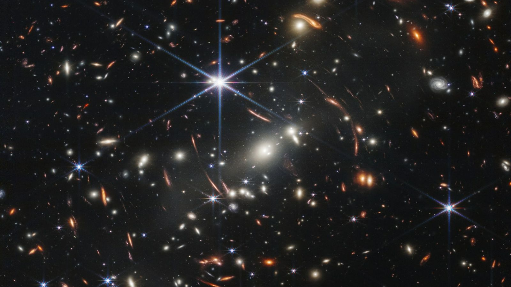
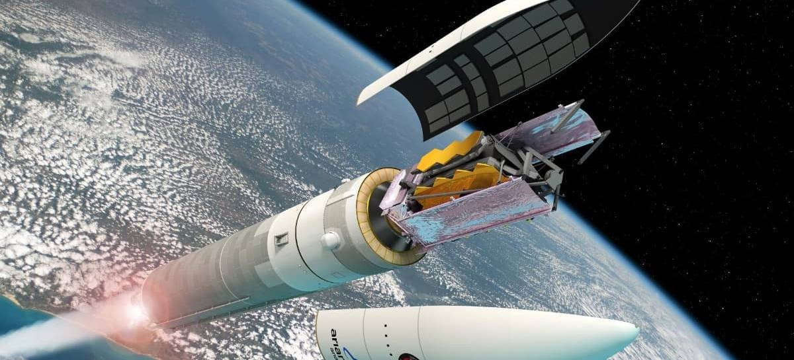
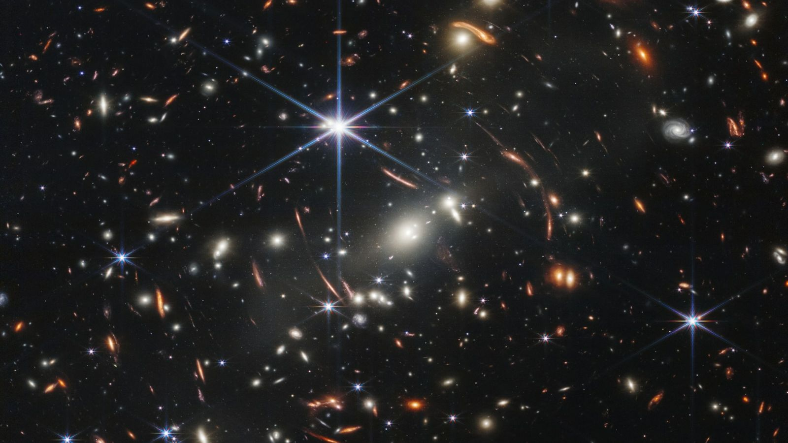
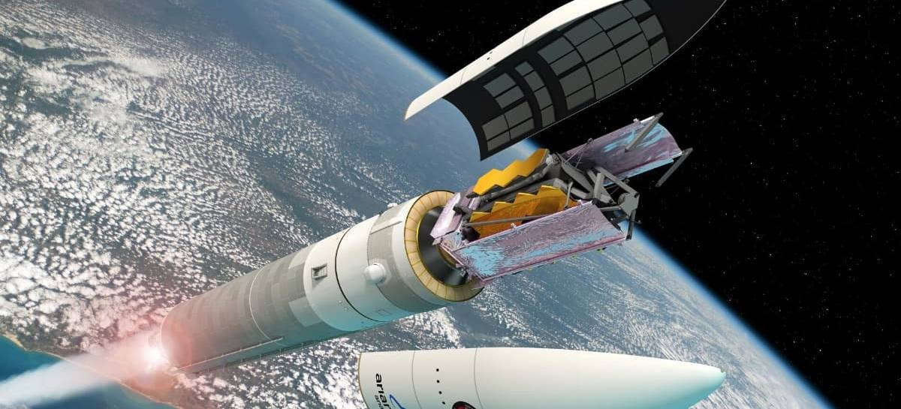
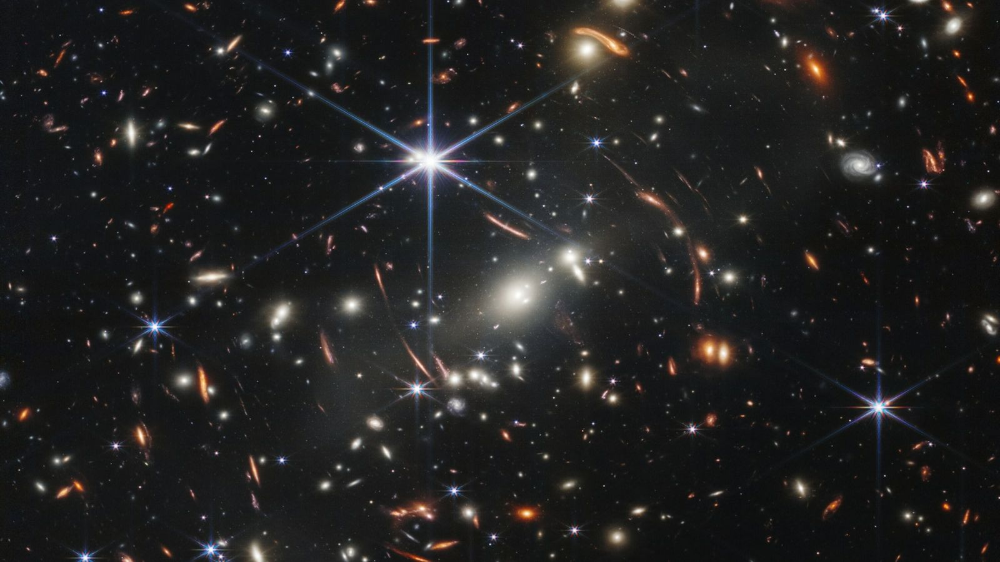
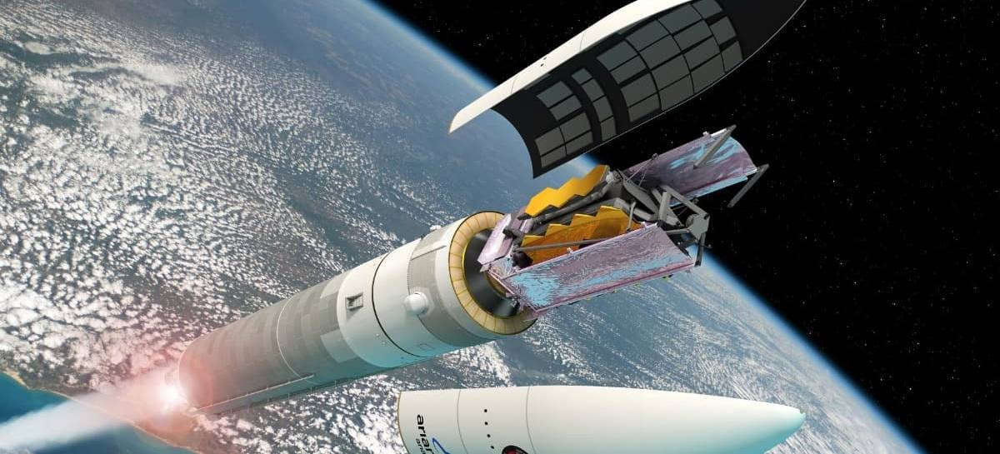
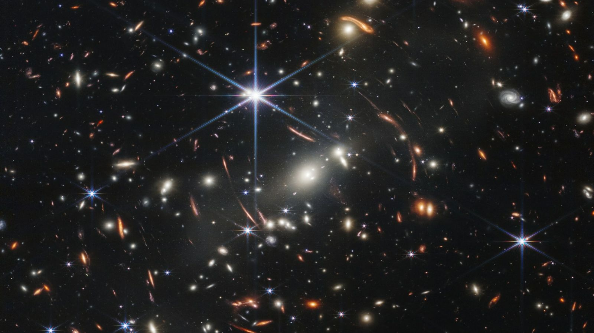
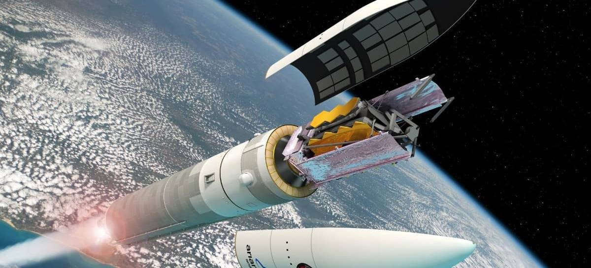

 




O sistema Solar é um conjunto de corpos celestes que gravitam na órbita de um sol (uma estrela). O nosso sistema solar é formado por oito planetas: Mercúrio, Vênus, Terra, Marte, Júpiter, Saturno, Urano e Netuno. Além deles, existem mais cinco planetas anões (Ceres, Plutão, Haumea, Makemake, Éris) e muitos outros astros, como satélites naturais, asteroides, meteoros, meteoroides e cometas. O Sol contém 99,86% de toda a massa do sistema, ela é responsável por gerar o efeito gravitacional que prende os demais Corpos celestes em sua órbita, formando o sistema. O Sol é composto de Hidrogênio (91,2%) e Hélio (8,7%) e a temperatura em seu núcleo é estimada em 15 milhões de graus Celsius. Os planetas que formam o sistema solar são, a partir do Sol: Mercúrio, Vênus, Terra, Marte, Júpiter, Saturno, Netuno e Urano. O sistema solar também compreende: Planetas anões (Plutão, Éris, Ceres, Makemake e Haumea) Asteroides, cujas órbitas se encontram principalmente entre as de Marte e de Júpiter Cometas e de meteoroides Até 2006, Plutão era reconhecido como um dos principais planetas do Sistema Solar. Porém, depois da descoberta de vários corpos celestes de tamanho parecido (e alguns até maiores que Plutão) no Cinturão de Kuiper, a União astronômica Internacional (U.A.I.) decidiu, no dia 24 de agosto de 2006, classificar Plutão como um planeta anão.
Algumas teorias tentam explicar a origem do Sistema Solar sendo uma delas a hipótese nebular. Segundo ela, no início, as estrelas teriam sido nebulosas, ou seja, grandes nuvens de poeira e gás que se compactaram girando cada vez mais rápido devido a sua força gravitacional. Sendo assim, há 4,5 bilhões de anos, sua porção central teria formado uma estrela, e a matéria exterior se contraiu por algum tipo de perturbação, dando origem aos planetas.
Inicialmente, é preciso saber que o Sol é uma estrela. Essa estrela possui 99,8% de toda a massa do sistema solar e, segundo a lei da gravitação universal de Newton, massa atrai massa. Assim, o Sol atrai tudo o que existe a sua volta e aprisiona uma série de astros e corpos celestes em sua órbita, formando o que chamamos de sistema solar. O meio interplanetário é o espaço existente entre os componentes do sistema solar constituído de poeira, que são partículas microscópicas no estado sólido, e gás, uma mistura de fluxo gasoso e partículas carregadas eletricamente.
Os planetas são astros sem luz nem calor próprio. No nosso sistema solar são conhecidos oito planetas que de acordo com a proximidade do Sol estão representados na imagem a seguir. Sistema Solar Representação do Sistema Solar Os planetas que compõem o sistema solar são classificados em terrestres e jovianos. Mercúrio, Vênus, Terra e Marte são planetas terrestres, pois rochas e metais pesados são abundantes em suas composições, além de possuírem menor massa, tamanho e estarem mais próximos do Sol. Júpiter, Saturno, Urano e Netuno são planetas jovianos ou gasosos, formados por componentes leves, como hidrogênio, hélio, metano e amônia. Ao contrário dos planetas terrestres, eles estão mais distantes do Sol, possuem maior massa e tamanho.
Os oito planetas do Sistema Solar apresentam características distintas conforme a sua constituição, são eles: Mercúrio: o mais próximo do Sol e o menor entre os planetas do Sistema Solar. Ele não possui satélites, tampouco condições de vida, sendo especialmente marcado por suas altas temperaturas. A sua proximidade do Sol e a sua atmosfera incompleta condicionam suas temperaturas elevadíssimas. Vênus: apresenta temperaturas ainda mais elevadas do que Mercúrio. Possui uma dimensão e também uma constituição muito próxima da Terra, sendo formado por diversos grupos de rochas. Ele é popularmente conhecido como Estrela D’alva em razão da sua luminosidade vista da Terra. Terra: é o único planeta que apresenta condições de vida entre os constituintes do Sistema Solar. A Terra realiza movimentos ao redor de si mesma, rotação, e em torno do Sol, translação. É um planeta rochoso, formado por diversos silicatos e basaltos, além de possuir atmosfera bem desenvolvida. Marte: o chamado Planeta Vermelho, composto por silicatos e basaltos, é um dos mais estudados pela astronomia terrestre. Apresenta condições climáticas adversas, sendo muito frio e seco. Há dois satélites artificias em Marte. O planeta, assim como a Terra, realiza movimentos de rotação e translação. Júpiter: o maior planeta do Sistema Solar é formado por diversos gases. Nele, há a ocorrência de inúmeros satélites naturais, conhecidos como as Luas Galileanas (descobertas por Galileu Galilei), que o orbitam. Os principais gases encontrados em Júpiter são hidrogênio, hélio e metano. Saturno: é conhecido pelos seus grandes anéis. Essas estruturas são formadas por partículas de gelo e rocha. Em Saturno, há o predomínio de gases diversos, como hidrogênio e hélio. Urano: está muito distante do Sol, sendo o segundo em distância, logo abaixo de Netuno. O planeta é formado por gases diversos. Assim com os outros planetas gasosos, possui vários satélites artificiais e também realiza movimentos planetários. Netuno: o planeta mais distante do Sol, é formado por diversos gases, como hidrogênio, hélio e metano. A cor azul, característica de planeta, é justamente ocasionada pela formação gasosa dele.